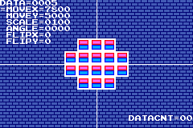

Cinnamoroll - Koko ni Iru yo (Japan)
Stateless / Passcode Debug Menu Patch
Cartridge Identity
- Game Code
BPSJ(FamilyBPS)- Header Title
CINNAMON A- Maker / Revision
9C/ rev0- ROM Size
- 4.0 MiB (4,194,304 B)
- Save Media
None / Unknown- SHA-256
9a677452e232f7e894b67aa78cf701982c98196a4ee97fce8bdc07ad88df755c- Engine / SDK Group
comm-010(33 families)
Screenshots


Debug Menu Re-Enablement Patch (.ips)
Download BPSJ-debug.ips (15 B IPS / 2 B delta)
- Hook Mechanism
thumb_imm_scene_override· Patch scene dispatcher at 0x08005e7a (ldr r0,[r4] -> movs r0,#48) to select AGB SYSTEM DEBUG MENU- IPS SHA-256
c16dcc5a5c631a57e0107a7f98207040f474ee78a66e421592935c505ac74f49
gbakit patch apply BPSJ-debug.ips original.gba patched-debug.gba

Cartridge Storage Architecture: Stateless / Passcode
Zero non-volatile battery hardware: This cartridge PCB contains ROM only (no SRAM, Flash, or EEPROM chips). Progression is preserved via on-screen passcodes or session-only gameplay. No
.sav file is generated or required.
ROM Assets, Compression & Audio
- BIOS Compression
- LZ77 (
0x10): 1 streams · RLE (0x30): 0 streams - ROM Pointer Tables
- 15 tables (0 pointing to validated compressed streams)
- SDK Backup Tags
EEPROM_V124
Hardware MMIO Subsystems
ppu_display0x8000874,0x8000888,0x8001980